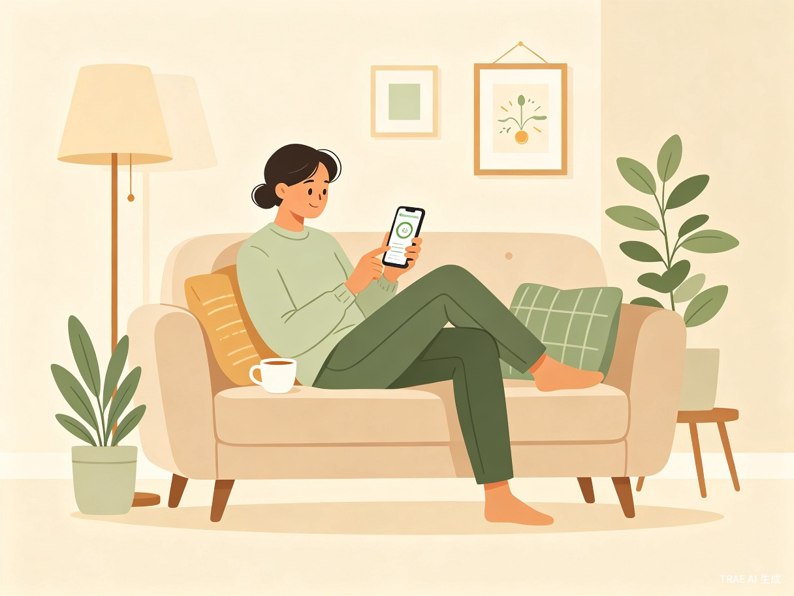
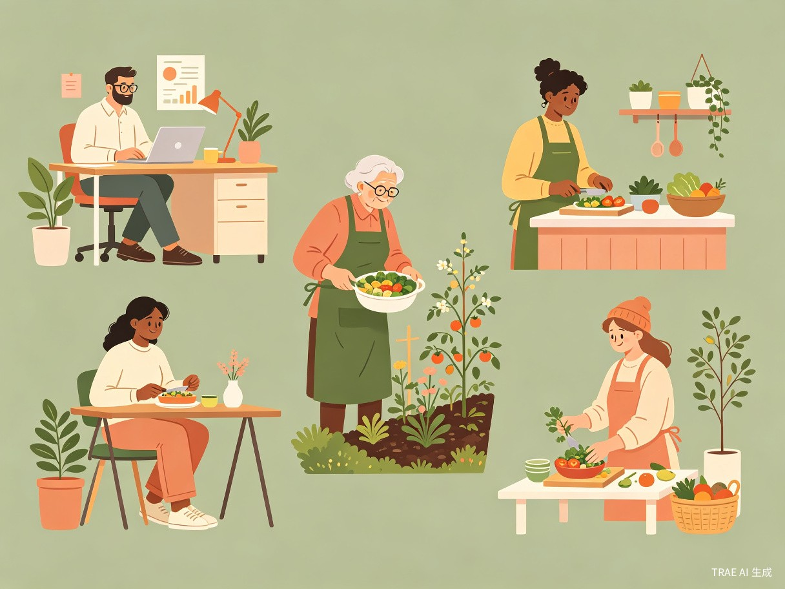

舒愈时光是一款无医疗敏感标识、无疾病筛查外露文案的免费轻量化微信小程序。依托三甲医院临床医学底层数据库，以日常肌体体质测评、作息康养分析为外包装，通过体征、生活作息、饮食习惯问卷研判机体潜在健康风险。
界面全域去除敏感词汇，外观为普通日常康养工具，旁人无法窥探用户真实使用目的，全方位保护用户健康隐私。
超60%常见恶性重症早期符合临床根治标准，术后五年生存率超90%。但早期无剧烈躯体痛感，民众主观判定自身健康，确诊时已步入中晚期，彻底丧失根治机会。

普通民众无法识别躯体乏力、晨起水肿、食欲减退等亚临床预警指征。
专业体检成本高、流程周期长，全民常态化体检依从性较差。
互联网健康科普缺乏临床依据，极易造成自我误判、漏判。
早期病灶可逆、可根治，但无剧烈痛感，用户主观判定健康。
市面自检产品标签直白，用户惧怕身边人揣测，拒绝使用。
下沉群体前置筛查资源匮乏，基层健康前置防控覆盖不足。
无固定体检习惯，长期久坐、熬夜、应酬。
关注日常康养，有慢病管理需求。
作息紊乱，躯体常有疲惫感。
对体检费用敏感，健康意识薄弱。
有家族慢病史，需定期关注。

界面全域去除重疾、隐疾、筛查、病变等敏感词汇，外观为普通日常康养工具，彻底保护隐私。
今天是养护肌体的第 12 天
肌体状态良好，继续保持
早睡打卡 · 饮水提醒 · 舒缓拉伸
睡眠质量提升 15%，作息更规律
首页 · 日常康养仪表盘
第 2/5 题 · 约需 3 分钟
选择最符合您近期感受的选项
测评页 · 生活化问卷
您的日常体质分析报告
睡眠时长略短，建议提前30分钟入睡
蔬果摄入充足，注意减少高油食物
建议关注晨起状态，适当增加日间活动
结果页 · 隐私化报告
graph TD
A[舒愈时光小程序] --> B[用户端]
A --> C[管理端]
A --> D[数据层]
B --> B1[日常测评模块]
B --> B2[康养打卡模块]
B --> B3[趋势分析模块]
B --> B4[个人中心模块]
B1 --> B1a[体征问卷]
B1 --> B1b[作息问卷]
B1 --> B1c[饮食问卷]
B1 --> B1d[综合评估]
B2 --> B2a[睡眠打卡]
B2 --> B2b[饮水记录]
B2 --> B2c[运动记录]
B2 --> B2d[舒缓建议]
B3 --> B3a[周度趋势]
B3 --> B3b[月度复盘]
B3 --> B3c[年度总结]
B4 --> B4a[健康档案]
B4 --> B4b[隐私设置]
B4 --> B4c[消息通知]
C --> C1[内容管理]
C --> C2[用户管理]
C --> C3[数据分析]
C --> C4[系统配置]
D --> D1[临床医学数据库]
D --> D2[用户行为数据]
D --> D3[评估算法模型]
D --> D4[隐私加密存储]
flowchart LR
A[微信授权登录] --> B[完善基础信息]
B --> C[选择测评场景]
C --> D[体征问卷]
D --> E[作息问卷]
E --> F[饮食问卷]
F --> G[AI综合评估]
G --> H{风险分级}
H -->|健康| I[日常康养建议]
H -->|亚健康| J[改善方案推荐]
H -->|需关注| K[就医引导提示]
I --> L[打卡追踪]
J --> L
K --> M[专科门诊对接]
L --> N[趋势复盘]
全域去除重疾、筛查、病变等词汇，外观为普通康养工具。
用户测评数据采用AES-256加密存储，密钥本地托管。
支持一键清除测评记录，微信小程序无需下载安装。
依托三甲医院临床医学数据，构建多维度评估模型，覆盖常见隐匿性重症早期指征。
| 评估维度 | 核心指标 | 数据来源 | 临床依据 |
|---|---|---|---|
| 体征状态 | 晨起状态、疲劳度、面色、水肿、体重波动 | 三甲医院专家共识 | 《中国肿瘤早筛指南》 |
| 作息规律 | 睡眠时长、入睡时间、夜间觉醒、昼夜节律 | Sleep Medicine 临床数据 | WHO 睡眠健康白皮书 |
| 饮食习惯 | 蔬果摄入、高脂饮食、腌制食品、饮酒频率 | 中国营养学会膳食指南 | 《中国居民膳食指南2022》 |
| 运动水平 | 周运动频次、久坐时长、运动强度 | ACSM 运动医学数据库 | 《中国人群身体活动指南》 |
| 家族因素 | 家族慢病史、遗传易感基因（自报） | 临床流行病学研究 | NCCN 遗传风险评估指南 |
| 情绪压力 | 焦虑水平、工作压力、社会支持度 | 心理卫生评定量表 | GAD-7 / PHQ-9 量表 |
| 环境暴露 | 吸烟史、二手烟暴露、空气污染暴露 | 环境流行病学数据 | IARC 致癌物清单 |
评估算法说明：采用多因子加权评分模型，结合贝叶斯概率网络，将用户问卷输入与临床医学数据库进行匹配，输出三级风险分级（健康/亚健康/需关注）。算法模型持续迭代优化，定期由临床医学专家组校准。
完成小程序MVP开发，邀请500名种子用户内测，收集反馈优化问卷逻辑与UI交互，建立初始用户健康档案数据库。
联合社区卫生服务中心、企业工会开展公益健康科普活动，目标覆盖10万用户，建立区域化健康数据看板。
对接三甲医院专科门诊绿色通道，构建"测评-预警-就医"闭环服务，下沉至县域基层医疗单位。
联合社区卫生服务中心，为中老年群体提供线下测评辅导与健康科普讲座。
为企业员工提供定制化体质测评服务，生成匿名化团体健康报告，助力企业健康管理。
每日推送循证医学健康小贴士，以康养视角解读日常健康行为，提升全民健康素养。
从源头降低重症中晚期确诊占比，提升临床治愈率与术后生存质量。
减少重疾家庭高额医疗开支，规避因病致贫返贫社会问题。
分流公立医院晚期重症诊疗压力，释放专科诊疗资源。
完善全民疾病预防医疗服务体系，补齐基层公共健康前置干预短板。
"最好的治疗是预防，最好的药物是时间。舒愈时光愿以日常康养之姿，守护每一份健康，让每一位用户都能抓住生命的黄金窗口。"